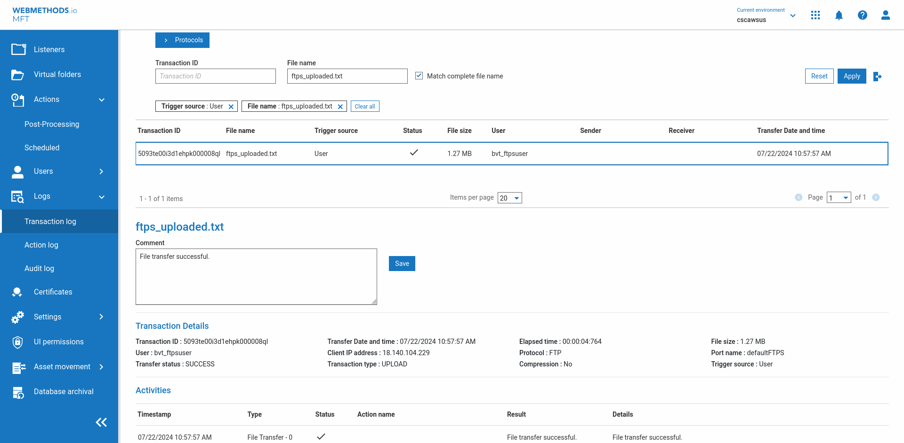
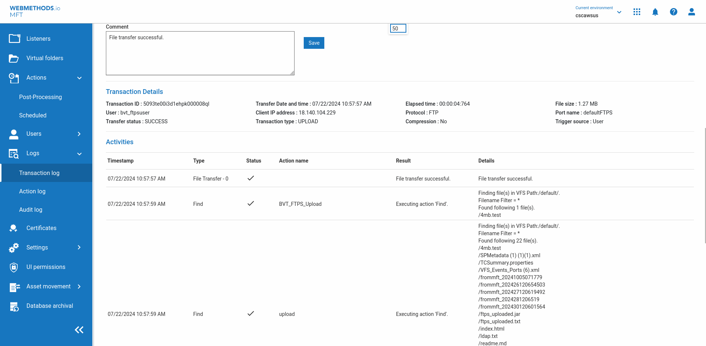
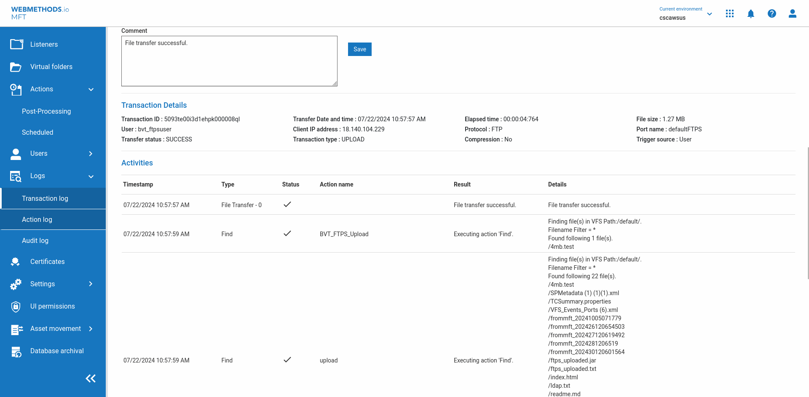
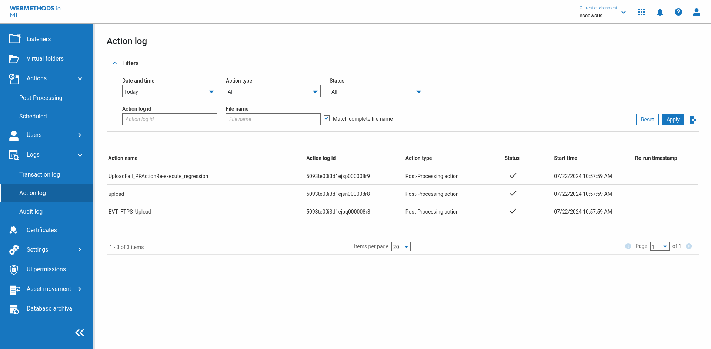
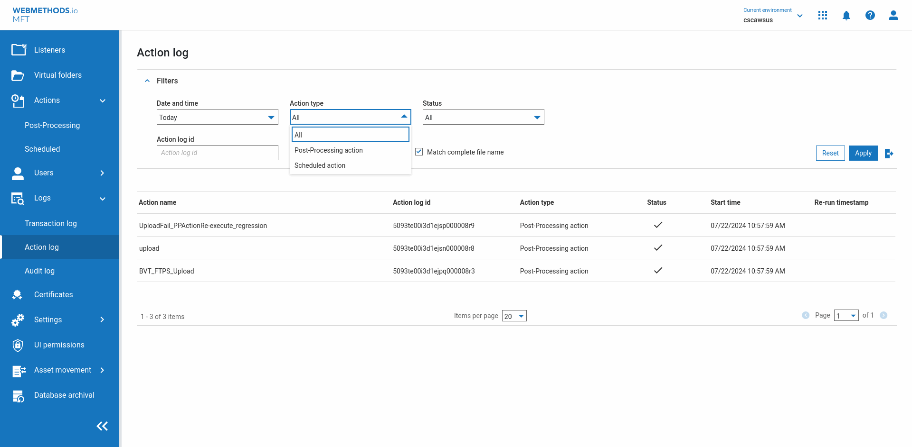
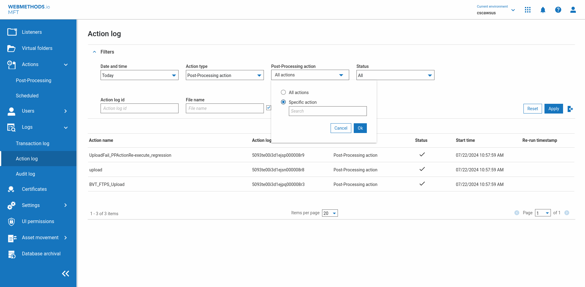
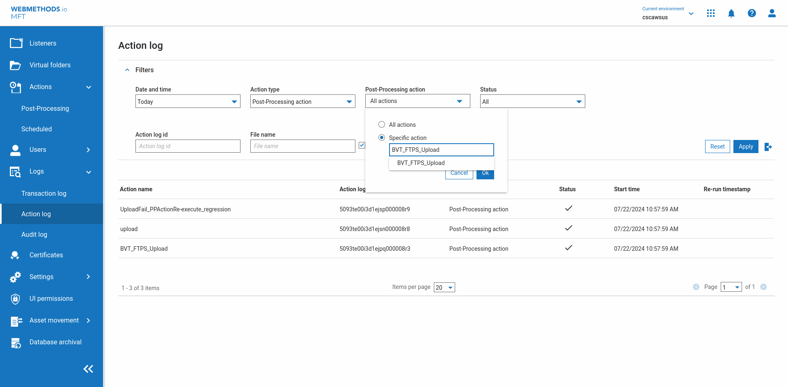
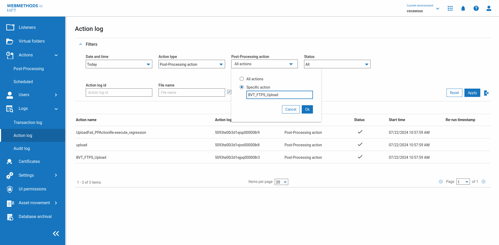
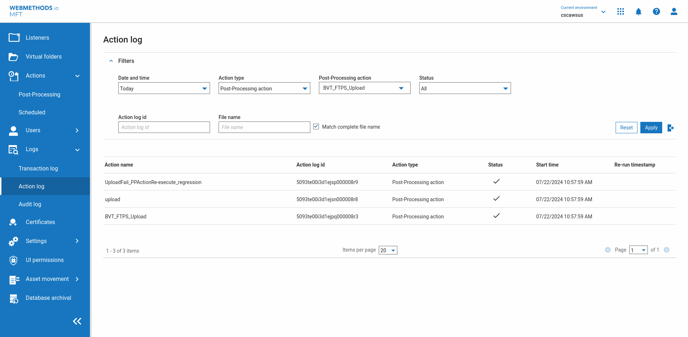
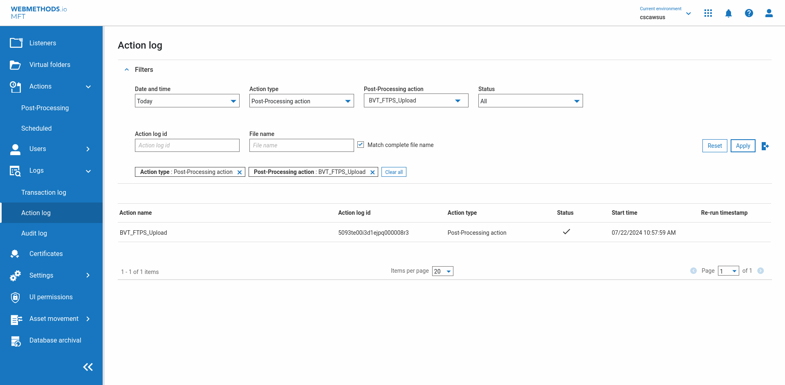

| Timestamp | Description | Status | Image |
| Thu Jul 11 22:29:57 IST 2024 | ********** ifSatisfy ********** | |  |
| Thu Jul 11 22:30:08 IST 2024 | Verify Expand Label following Logs label isVisible Some elements have been filterd because the element is not on top even though it is visible on the UI, Consider adding an optional attribute [ignoreOnTopCheck] | |  |
| Thu Jul 11 22:30:08 IST 2024 | ********** else ********** | |  |
| Thu Jul 11 22:30:08 IST 2024 | *** END ifsatisfy "Verify "Expand" Label following "Logs" label isVisible" execute "Click "Expand" Label following "Logs" label" | |  |
| Thu Jul 11 22:30:39 IST 2024 | click "Action log" link above "Audit log" link [ignoreIsDisplayed] Some elements have been filterd because the element is not on top even though it is visible on the UI, Consider adding an optional attribute [ignoreOnTopCheck] | |  |
| Thu Jul 11 22:30:39 IST 2024 | Retrying by ignoring the visibility filtering. If this passes add the optional parameter [ignoreIsDisplayed] for the faster execution next time | |  |
| Thu Jul 11 22:30:39 IST 2024 | ************ COMMAND EXECUTION FAILED. TRYING AGAIN TO SEE IF THE COMMAND PASSES ON SECOND ATTEMPT | |  |
| Thu Jul 11 22:30:41 IST 2024 | click "Action log" link above "Audit log" link [ignoreIsDisplayed] Some elements have been filterd because the element is not on top even though it is visible on the UI, Consider adding an optional attribute [ignoreOnTopCheck] | |  |
| Thu Jul 11 22:30:41 IST 2024 | ************ RE-TRY ALSO FAILED/NOT-TRIED. RECOVER BY RE-TRYING PREVIOUS CNL. TOTAL PREVIOUS CNL : 2 | |  |
| Thu Jul 11 22:30:41 IST 2024 | ************ RECOVERY ATTEMPT 1 of 10 with 2 previous commands | | |
| Thu Jul 11 22:30:42 IST 2024 | ********** ifSatisfy ********** | |  |
| Thu Jul 11 22:30:52 IST 2024 | Verify Expand Label following Logs label isVisible Some elements have been filterd because the element is not on top even though it is visible on the UI, Consider adding an optional attribute [ignoreOnTopCheck] | |  |
| Thu Jul 11 22:30:52 IST 2024 | ********** else ********** | |  |
| Thu Jul 11 22:30:52 IST 2024 | *** END ifsatisfy "Verify "Expand" Label following "Logs" label isVisible" execute "Click "Expand" Label following "Logs" label" | |  |
| Thu Jul 11 22:30:53 IST 2024 | waitforpagetoload [doNotHandleAlert] | |  |
| Thu Jul 11 22:30:55 IST 2024 | click "Action log" link above "Audit log" link [ignoreIsDisplayed] Some elements have been filterd because the element is not on top even though it is visible on the UI, Consider adding an optional attribute [ignoreOnTopCheck] | |  |
| Thu Jul 11 22:30:59 IST 2024 | Browser Snapshot taken by ALF on action failure | |  |
| Thu Jul 11 22:30:59 IST 2024 | Desktop Snapshot taken by ALF on action failure | |  |